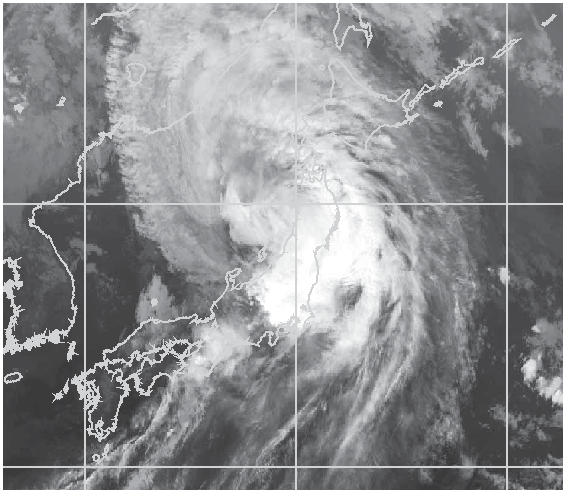

気象予報士試験 専門知識¶
第54回 問6¶
問題¶
気象庁の天気予報ガイダンスについて述べた次の文(a)~(c)の正誤の組み合わせとして正しいものを,下記の①~⑤の中から1つ選べ。
(a)数値予報モデルで予想された降水域の位置が実際の位置から外れている場合,降水量ガイダンスにより,その位置のずれを修正し誤差を大幅に減らすことは困難である。
(b)風ガイダンスにより,数値予報の風速の予測誤差を低減することはできるが,風向の予測誤差を低減することは困難である。
(c)発雷確率ガイダンスは,対象領域内での発雷数の多寡を予想するガイダンスである。
感想と解答¶
ガイダンスということばがよくわからない。
-
数値が予想した気温や湿度などから、降水などを予測すること
統計式により求める
気象庁のサイトにも書いてある https://www.jma.go.jp/jma/kishou/know/yougo_hp/shiryo.html
降水確率ガイダンス (Probability of Precipitation, PoP): 所定の時間内に1mm以上の降水のある確率を示すガイダンス。予報対象領域内での地点確率の平均値を示す。
思考過程
(a) 降水ガイダンスは統計的に系統誤差を処理できるので、間違っているように思える
(b) 常に数値がある一定量のWind Directionずれを起こすような場所では、統計式で修正可能に思えるので、間違っているように思える
(c) 気象庁のサイトによると、発雷ガイダンスは一発でも雷が落ちる確率な感じがする。ので間違っているように思える
正解は正誤誤。(a)の降水域のずれはランダムらしい。なぜランダムというのかはよくわからないな・・
参考：https://kishoyohoshi.com/archives/15900.html#q06
よく考えてみると、降水域は常にはずれている、とは言っていない。なので正がいい気がする。そうすると(b)も常に外れているとは言っていないので文句をいいたくなるが、Wind speedはなんとかなってWind Directionはダメという文章自体がおかしいので誤と判断できそうだ。
ガイダンスのところを知って面白かったのは、
結局数値で頑張って計算しても、そこから先は統計式にあてはめるということ（カルマンフィルターを使うにしても）
降水確率というのは1mm以上降るときのことをさしていること。0%で1mm未満降っても文句を言ってはいけない。
第54回 問7¶
問題¶
解析雨量について述べた次の文(a)-(d)の下線部の正誤の組み合わせとして正しいものを,下記の①-⑤の中から1つ選べ。
(a)解析雨量は,気象レーダーと雨量計の観測データを組み合わせ,降水量分布を1km 四方の細かさで解析したもので,面的に雨量を推定できる気象レーダーと,正確な雨量を観測できる雨量計の両方の長所を活かしたものである。
(b)海上の解析雨量は,陸上の雨量計から得られた情報を用いて気象レーダーの観測 データを補正しているため,陸上よりも一般に誤差が大きい。
(c)解析雨量は実測値ではないことから,土壌雨量指数や表面雨量指数の算出の際の入力データとしては利用されない。
(d)解析雨量には,30分ごとに1時間雨量を算出するものと,10分ごとに1時間雨量を算出する速報版がある。後者は前者より,利用する雨量計データの数が少ないため精渡は若干低いが,更新頻渡が高く,観測から提供までに要する時間が短い。
感想と解答¶
分からない言葉が多いので調べる。
解析雨量と速報版解析雨量は、気象庁・国土交通省が保有する気象レーダーの観測データに加え、気象庁・国土交通省・地方自治体が保有する全国の雨量計のデータを組み合わせて、1時間の降水量分布を1km四方の細かさで解析したものです。解析雨量は30分ごとに、速報版解析雨量は10分ごとに作成されます。例えば、9時の解析雨量は8時～9時、9時10分の速報版解析雨量は8時10分～9時10分の１時間雨量となります。解析雨量や速報版解析雨量を利用すると、雨量計の観測網にかからないような局所的な強雨も把握することができるので、的確な防災対応に役立ちます。気象庁ホームページでは、今後の雨（降水短時間予報）のページからご利用になれます。時間を表すバーの水色の時間帯が解析雨量の表示で、最新のデータのみ速報版解析雨量を表示しています。表示例はこちらをご覧ください。 気象庁ウェブサイト 解析雨量
土壌雨量指数とは、降った雨による土砂災害危険度の高まりを把握するための指標です。 大雨に伴って発生する土砂災害（がけ崩れ・土石流）には、現在降っている雨だけでなく、これまでに降った雨による土壌中の水分量が深く関係しており、土壌雨量指数は、降った雨が土壌中に水分量としてどれだけ溜まっているかを、タンクモデルを用いて数値化したものです。土壌雨量指数は、各地の気象台が発表する大雨警報（土砂災害）や土砂災害警戒情報等の判断基準に用いています。 土壌雨量指数そのものは相対的な土砂災害危険度を示した指標ですが、土壌雨量指数を大雨警報等の判断基準と比較することで土砂災害発生の危険度（重大な土砂災害が発生するおそれがあるかどうかなど）を判断することができます。これらの判断基準は過去の土砂災害発生時の土壌雨量指数等を調査した上で設定しているため、指数計算では考慮されていない要素（地盤の崩れやすさの違いなど）も判断基準には一定程度反映されています。土砂災害発生の危険度を判定した結果は「大雨警報（土砂災害）の危険度分布」で確認できます。 気象庁ウェブサイト 土壌雨量指数:
表面雨量指数とは、短時間強雨による浸水危険度の高まりを把握するための指標です。 降った雨が地中に浸み込みやすい山地や水はけのよい傾斜地では、雨水が溜まりにくいという特徴がある一方、地表面の多くがアスファルトで覆われている都市部では、雨水が地中に浸み込みにくく地表面に溜まりやすいという特徴があります。表面雨量指数は、こうした地面の被覆状況や地質、地形勾配などを考慮して、降った雨が地表面にどれだけ溜まっているかを、タンクモデルを用いて数値化したものです。表面雨量指数は、各地の気象台が発表する大雨警報（浸水害）・大雨注意報の判断基準に用いています。 表面雨量指数そのものは相対的な浸水危険度を示した指標ですが、表面雨量指数を大雨警報（浸水害）等の基準値と比較することで浸水害発生の危険度（重大な浸水害が発生するおそれがあるかどうかなど）を判断することができます。この大雨警報（浸水害）等の基準値は、過去の浸水害発生時の表面雨量指数を調査した上で設定しているため、指数計算では考慮されていない要素（下水道等のインフラの整備状況の違いなど）も基準値には一定程度反映されています。浸水害発生の危険度を判定した結果は「大雨警報（浸水害）の危険度分布」で確認できます。 気象庁ウェブサイト 表面雨量指数
気象庁のサイトはなんでも載っていてすごい
考えたこと
(a)は気象庁のサイトの説明そのままなので正に思える
(b): 気象庁のサイトは海上について載っていないが、海上には雨量計がないので誤差が大きいのは妥当に思える
(c): 気象庁のサイトによると、解析雨量は土壌雨量指数や表面雨量指数の初期値として使われていると書いてあるので間違い
(d): 気象庁のサイトによると、雨量計の数が少ないという記述はない。一方で、によると、次のように書いてある。
速報版解析雨量は、算出処理の所要時間を短縮して作成頻度を10分間隔とした1kmメッシュの前１時間降水量分布です。速報版解析雨量は、算出処理の所要時間を短縮するため、雨量の算出に際し利用できる雨量計の数が制限されます。このため、算出処理の所要時間がより長くより多くの雨量計を用いて雨量を解析している「1kmメッシュ解析雨量GPV」の方が精度は高いものとなります。 気象業務支援センター
上記を読むと雨量計のデータを制限していることがわかる。よって正しい。
第54回 間8¶
問題¶
図は,西日本に上陸し,その後勢力を弱めて日本海に進んだ台風の気象衛星赤外画像である。このような台風について述べた次の文(a)~(d)の正誤の組み合わせとして正しいものを,下記の①~⑤の中から1つ選べ。
(a)この台風は,眼が不明瞭化し軸対称性も崩れてきているが,周辺には活発な対流雲を伴っているため,引き続き大雨への警戒が必要である。
(b)この台風のように,台風が上陸後に勢力を弱める主な原因は,水蒸気の供給が減少し,また,陸地の摩擦によりエネルギーが失われるためである。
(c)この図のように台風が日本付近を北上するときに,台風の軸対称性が崩れる主な原因は,北上するにつれてコリオリ力が大きくなり,傾度風のバランスが変化するためである。
(d)この図のような,日本列島に接近·上陸し大きな影響を及ぼす可能性が非常に高い台風については,気象庁は1日先までの台風の予報を最短1時間ごとに発表する。

感想と解答¶
赤外画像の見方がよくわからない。
調べたもの
さらに、台風が日本に接近し、影響するおそれがある場合には、台風の位置や強さなどの実況と1時間後の推定値を1時間ごとに発表するとともに、24時間先までの3時間刻みの予報を3時間ごとに発表します。 気象庁ウェブサイト 台風情報の種類と表現方法{.origin.pull-right}
台風は暖かい海面から供給された水蒸気が凝結して雲粒になるときに放出される熱をエネルギーとして発達します。しかし、移動する際に海面や地上との摩擦により絶えずエネルギーを失っており、仮にエネルギーの供給がなくなれば２～３日で消滅してしまいます。また、日本付近に接近すると上空に寒気が流れ込むようになり、次第に台風本来の性質を失って「温帯低気圧」に変わります。あるいは、熱エネルギーの供給が少なくなり衰えて「熱帯低気圧」に変わることもあります。上陸した台風が急速に衰えるのは水蒸気の供給が絶たれ、さらに陸地の摩擦によりエネルギーが失われるからです。 気象庁ウェブサイト 台風とは
コリオリ力の性質は次のとおりである。 (1) 緯度
$\phi$にあって水平速度$V$で動いている空気塊はコリオリ力を受ける。
E = m c^2